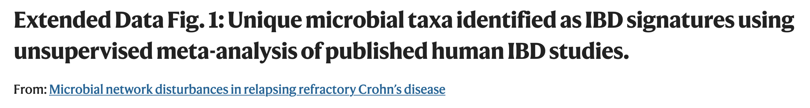

Code
library(pheatmap)
library(RColorBrewer)
library(tidyverse)
library(readxl)
library(gridExtra)This is a Quarto document which nicely combines both R code, its results and text explanation to enable an easy and interactive access for both learners, readers and supervisors to such analyses. To learn more about Quarto see https://quarto.org. By default all code lines are blended, but you can show them by clicking on the code button.

This is a sample plot mapping the clinical information collected from literature meta-analysis. In this demonstration the data were taken from this study and reduced for convenience. Authors manually extracted bacterial abundance measurment data (16S rRNA seq analysis) for given taxonomic units and transformed an increase or decrease in certain categories from integers -3 up to 3 where 0 means no change in diseases. This is a basis for making a simple heatmap based on bacterial data only.
In rows we see different taxa and in columns we see different studies (papers) numbered from 1 to 20. The power of this figure is hovewer in combining visual bacterial changes information with visual clinical parameter trends extracted from publications manually. The latter would allow us to see whether any results are caused or associated with particular patient characteristics of study techniques.
For this data analysis we will need next R packages: tidyverse, pheatmap, RColorBrewer, readxl, gridExtra
library(pheatmap)
library(RColorBrewer)
library(tidyverse)
library(readxl)
library(gridExtra)Let us load a data directly from Excel file using read_xlsx function from readxl package This data is taken from this publication and us used as a small subset. Table Taxa contains the name of taxonomic units in rows and different publication numbers in columns. As experimental outcome values the bacterial abundance change on the scale from -3 to 3 is presented. -3, -2, -1 can be interpreted as bacterial decrease in very severe/severe/light disease stage and so positive values. Alternatively, one can assign to different decrease degrees different diseases or other clinical parameters.
Taxa <-read_xlsx("./../input/Literature_HeatMap_Data_Ivan2.xlsx", sheet = 1)
Taxa <- tibble::column_to_rownames(Taxa, var = names(Taxa)[1])
annotation_table <- read_xlsx("./../input/Literature_HeatMap_Data_Ivan2.xlsx", sheet = 2)
annotation_table <- tibble::column_to_rownames(annotation_table, var = names(annotation_table)[1])annotation_table contains different clinical parameters as rows and again publication numbers as columns. As values different types of clinical parameters are used (as designated on the figure legend) - they will be handled as categorical variables in our analysis. These values were extracted from publications manualy.
rwbcols <- c("#D33F6A","#E07B91","#E6AFB9","#f4fcfc","#B5BBE3", "#8595E1", "#4A6FE3")
pheatmap(Taxa,
fontsize_row = 8, fontsize_col = 5, cluster_cols = TRUE, cluster_rows = F,
color = colorRampPalette(rev(rwbcols))(100),
cellwidth = 7, cellheight = 12)
ann_colors = list(
Gender = c(Less="#3399FF", More="#cc6666", Unknown="#f4fcfc"),
Sample_Type = c(Biopsy="#efe9d0", Stool="#ccbb74", Stool_Biopsy="#bc5607"),
Sample_Size = c(LessThanFifty="#cff7d5",Between50_100="#a5f7b0", Between101_200="#78e887", MoreThan200="#47a354"),
Median_Age = c(BetweenTenTwenty="#e1e8f4",BetweenThirtyFourty="#c1d3f2", BetweenThirtyFifty="#94b6ef", BetweenFiftySeventy="#6d98e0", Unknown="#f4fcfc"),
RaceEthnicity = c(MostlyCaucasian="#aaf2ff", Indian="brown", Japanese="#e5f98b", Han= "#efb94c", Korean = "#cc6666", Unknown="#f4fcfc"),
Method = c(RT_PCR="#e9e3ef", R454="#c3a9e5", MiSeq="#a276db", HiSeq="#7b45c1", Other="#f4fcfc"))pheatmap(Taxa,
fontsize_row = 8, fontsize_col = 5, cluster_cols = FALSE, cluster_rows = FALSE,
color = colorRampPalette(rev(rwbcols))(100),
cellwidth = 7, cellheight = 12,
annotation_col=annotation_table, annotation_colors = ann_colors, border_color = "grey60"
)
We slightly adjust the data changing some annotation value names
Taxa<-read_xlsx("./../input/Literature_HeatMap_Data_Ivan3.xlsx", sheet = 1)
Taxa <- tibble::column_to_rownames(Taxa, var = names(Taxa)[1])
annotation_table <- read_xlsx("./../input/Literature_HeatMap_Data_Ivan3.xlsx", sheet = 2)
annotation_table <- tibble::column_to_rownames(annotation_table, var = names(annotation_table)[1])Define your color palettes and the rwbcols. Prepare Taxa data (transform into long format)
rwbcols <- brewer.pal(3, "RdBu")
Taxa <- rownames_to_column(Taxa, "RowNames")
Taxa_long <- pivot_longer(Taxa, cols = -RowNames, names_to = "ColumnName", values_to = "Value")
Taxa_long <- Taxa_long %>%
arrange(desc(RowNames))Prepare annotation data color scheme
ann_colors <- list(Less="#3399FF", More="#cc6666", Unknown="#f4fcfc", Biopsy="#efe9d0",
Stool="#ccbb74", Stool_Biopsy="#bc5607", LessThanFifty="#cff7d5", Between50_100="#a5f7b0",
Between101_200="#78e887", MoreThan200="#47a354",
BetweenTenTwenty="#e1e8f4",
BetweenThirtyFourty="#c1d3f2",
BetweenThirtyFifty="#94b6ef", BetweenFiftySeventy="#6d98e0", NotKnown="#f4fcfc",
MostlyCaucasian="#aaf2ff",
Indian="brown", Japanese="#e5f98b", Han= "#efb94c", Korean = "#cc6666", Not_known="#f4fcfc",
RT_PCR="#e9e3ef", R454="#c3a9e5", MiSeq="#a276db", HiSeq="#7b45c1", Other="#f4fcfc")Prepare Annotations data. Flatten the list of vectors into a single named vector for use in ggplot. Ensure that the ‘Value’ column is a factor and its levels are in the order of ‘all_colors’
annotation_table_long <- annotation_table %>%
rownames_to_column("Publication") %>%
pivot_longer(cols = -Publication, names_to = "Parameter", values_to = "Value")
all_colors <- unlist(ann_colors)
annotation_table_long$Value <- factor(annotation_table_long$Value, levels = names(all_colors))p1 <- ggplot(Taxa_long, aes(x = ColumnName, y = RowNames, fill = Value)) +
geom_tile(width = 1, height = 1,color = "grey50") +
scale_fill_gradientn(colors = colorRampPalette(rev(rwbcols))(100)) +
theme_minimal() +
theme(
plot.margin = unit(c(0, 0, 0, 0), "cm"), # Adjust margins around the plot
axis.text.x = element_text(size = 5, angle = 45, hjust = 1),
axis.text.y = element_text(size = 8),
axis.title = element_blank(),
legend.title = element_text(size = 7), # Smaller legend title
legend.text = element_text(size = 7), # Smaller legend text
legend.key.size = unit(0.4, "cm")) + # Smaller legend keys
coord_fixed(ratio = 12 / 7) + # Adjust ratio based on cellheight and cellwidth
scale_y_discrete(position = "right") # Position the y-axis on the right
p1
p2 <- ggplot(annotation_table_long, aes(x = Publication, y = Parameter, fill = Value)) +
geom_tile(width = 1.2, height = 0.8,color = "black") + # Width is larger than height
scale_fill_manual(values = all_colors) + # Use the flattened color vector
theme_void() + # Start with a blank theme
theme(
plot.margin = unit(c(0, 6.4, 0, 0), "cm"), # Adjust margins around the plot
axis.text.x = element_text(angle = 90, hjust = 1, vjust = 1, size = 6, color = "black"), # Customize x axis labels
axis.text.y = element_text(angle = 0, hjust = 1, size = 8, color = "black"), # Customize y axis labels
axis.title.x = element_text(size = 12, face = "bold"), # X-axis title
axis.title.y = element_text(size = 14, face = "bold"), # Y-axis title
legend.title = element_text(size = 7), # Smaller legend title
legend.text = element_text(size = 6), # Smaller legend text
legend.key.size = unit(0.25, "cm") # Smaller legend keys
) +
labs(
x = "", # Rename X axis
y = "", # Rename Y axis
fill = "" # Legend title
) +
coord_fixed(ratio = 2) + # Adjust ratio based on cellheight and cellwidth
scale_x_discrete(position = "top") + # Position the x-axis at the top
scale_y_discrete(position = "right") # Position the y-axis on the right
ggplot2.plot <- grid.arrange(p2, p1, ncol = 1, heights = c(1, 4.1))
Many thanks to Prof. Yilmaz (UniBern) for data sample and help with learning this type of plot